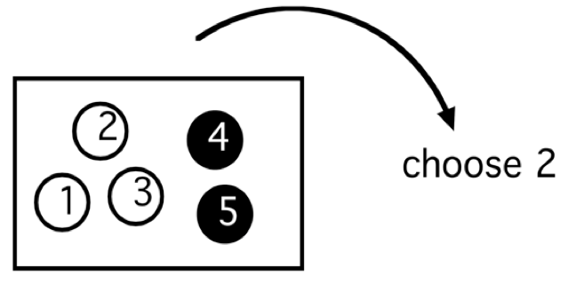
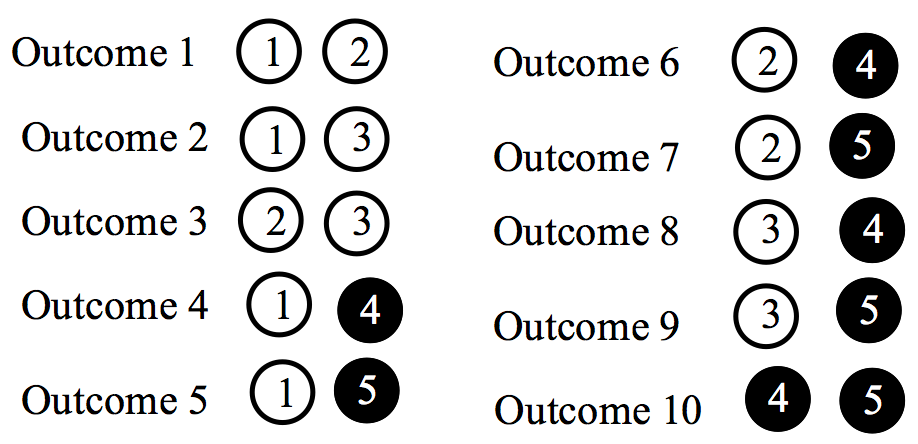
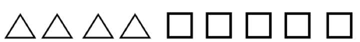
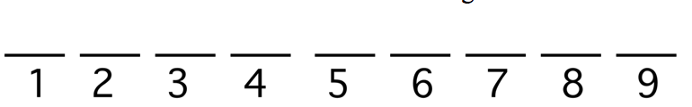
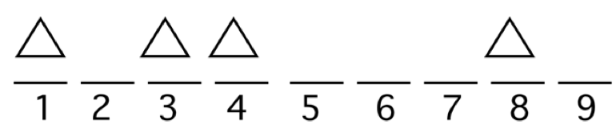
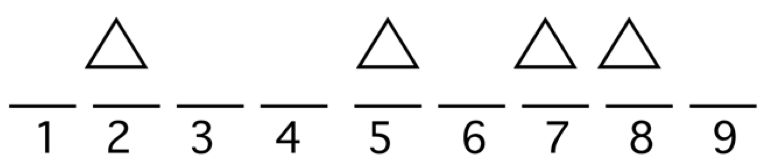
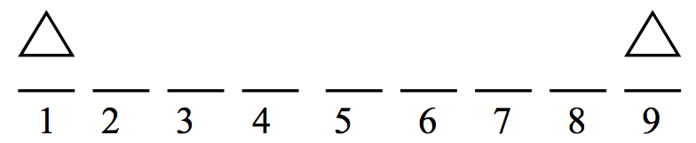

Chapter 2 Counting Methods
2.1 Introduction: Rolling Dice, Yahtzee, and Roulette
Dice are one of the oldest randomization devices known to man. Egyptian tombs, dated from 2000 BC, were found containing dice and there have some evidence of dice in archaeological excavations dating back to 6000 BC. It is interesting to note that dice appeared to be invented independently by many ancient cultures across the world. In ancient times, the result of a die throw was not just considered luck, but determined by gods. So casting dice was often used as a way of making decisions such as choosing rulers or dividing inheritances. The Roman goddess, Fortuna, daughter of Zeus was believed to determine the outcome of a throw.
The Game of Yahtzee
In the 19th and 20th centuries, standard six-sided dice became a basic component of many commercial board games that were developed. One of the most current popular games is Yahtzee that is played with five dice. The Hasbro game company () presents the history of the game. Yahtzee was invented by a wealthy Canadian couple to play aboard their yacht. This “yacht” game was popular among the couple’s friends, who wanted copies of the game for themselves. The couple approached Mr. Edwin Lowe, who made a fortune selling bingo games, about marketing the game. Mr. Lowe’s initial attempts to sell the game of Yahtzee by placing ads were not successful. Lowe thought that the game had to be played to be appreciated and he hosted a number of Yahtzee parties and the game became very successful. The Milton Bradley company acquired the E. S. Lowe Company and Yahtzee in 1973 and currently more than 50 million games are sold annually.
The Casino Game of Roulette
Roulette is one of the most popular casino games. The name roulette is derived from the French word meaning small wheel. Although the origin of the game is not clear, it became very popular during the 18th century when Prince Charles introduced gambling to Monaco to alleviate the country’s current financial problems. The game was brought to America in the early part of the 19th century and is currently featured in all casinos. In addition, roulette is a popular game among people who like to game online.
The American version of the game discussed in this book varies slightly from the European version. The American roulette wheel contains 38 pockets, numbers 1 through 36 plus zero plus double zero. The wheel is spun and a small metal ball comes to rest in one of the 38 pockets.
Players will place chips on particular locations on a roulette table, predicting where the ball will land when after the wheel is spun and the ball comes to a stop. The dealer places a mark on the winning number. The players who have bet on the winning number are rewarded while the players who bet on losing numbers lose their chips to the casino.
2.2 Equally Likely Outcomes
Assume one writes the sample space in such a way that the outcomes are equally likely. Then, applying the classical interpretation, the probability of each outcome will be
\[\begin{equation} Prob({\rm Outcome}) = \frac{1}{{\rm Number} \, {\rm of} \, {\rm outcomes}}. \tag{2.1} \end{equation}\] If one is interested in the probability of some event, then the probability is given by \[\begin{equation} Prob({\rm Event}) = \frac{{\rm Number} \, {\rm of} \, {\rm outcomes} \, {\rm in} \, {\rm event}}{{\rm Number} \, {\rm of} \, {\rm outcomes}}. \tag{2.2} \end{equation}\]
This simple formula should be used with caution. To illustrate the use (and misuse) of this formula, suppose one has a box containing five balls of which three are red, one is blue, and one is white. One selects three balls without replacement from the box – what is the probability that all red balls are chosen?
Let’s consider two representations of the sample space of this experiment.
Sample space 1: Suppose one does not distinguish between balls of the same color and does not care about the order in which the balls are selected. Then if \(R\), \(B\), \(W\) denote choosing a red, blue, and white ball respectively, then there are four possible outcomes: \[ S_1 = \{(R, R, R), (R, R, B), (R, R, W), (R, B, W)\}. \] If these outcomes in \(S_1\) are assumed equally likely, then the probability of choosing all red balls is \[ Prob({\rm all} \, {\rm reds}) = \frac{1}{4}. \]
Sample space 2: Suppose instead that one distinguishes the balls of the same color, so the balls in the box are denoted by \(R1, R2, R3, B, W\). Then one writes down ten possible outcomes
\(S_2\) = {\((R1, R2, R3)\), \((R1, R2, B)\), \((R1, R2, W)\), \((R1, R3, B)\), \((R1, R3, W)\), \((R2, R3, B)\), \((R2, R3, W)\), \((R1, B, W)\), \((R2, B, W)\), \((R3, B, W)\)}.
If one assumes these outcomes are equally likely, then the probability of choosing all reds is \[ Prob({\rm all} \, {\rm reds}) = \frac{1}{10}. \] If one compares the answers, one sees an obvious problem since one obtains two different answers for the probability of choosing all reds. What is going on? The problem is that the outcomes in the first sample space \(S_1\) are not equally likely. In particular, the chance of choosing three reds \((R, R, R)\) is smaller than the chance of choosing a red, blue and white \((R, B, W)\) – there is only one way of selecting three reds, but there are three ways of selecting exactly one red. On the other hand, the outcomes in sample space \(S_2\) are equally likely since one was careful to distinguish the five balls in the box, and it is reasonable that any three of the five balls has the same chance of being selected.
From this example, a couple of things have been learned. First, when one writes down a sample space, one should think carefully about the assumption that outcomes are equally likely. Second, when one has an experiment with duplicate items (like three red balls), it may be preferable to distinguish the items when one writes down the sample space and computes probabilities.
Sampling From a Box
One simulates this experiment on R by first creating a vector with the ball colors, and then using the function to sample three balls from the vector. The argument indicates that a sample of 3 is chosen, and the argument ensures that the sampling is done without replacement. In this particular simulation, one observes a red, blue, and red ball in our sample.
## [1] "blue" "red" "white"2.3 The Multiplication Counting Rule
To apply the equally likely recipe for computing probabilities, one needs some methods for counting the number of outcomes in the sample space and the number of outcomes in the event. Here we illustrate a basic counting rule called the multiplication rule.
Suppose you are dining at your favorite restaurant. Your dinner consists of an appetizer, an entr'ee, and a dessert. You can either choose soup, fruit cup, or quesadillas for your appetizer, you have the choice of chicken, beef, fish, or lamb for your entr'ee, and you can have either pie or ice cream for your dessert.
We first use a tree diagram to write down all of your possible dinners, in Figure . The first set of branches shows the appetizers, the next set of branches the entr'ees, and the last set of branches the desserts.

Figure 2.1: Tree diagram of possible dinners.
Note that there are 3 possible appetizers, 4 possible entr'ees, and 2 possible desserts. For each appetizer, there are 4 possible entr'ees, and so there are 3 x 4 = 12 possible choices of appetizer and entr'ee. Using similar reasoning, for each combination of appetizer and entr'ee, there are 2 possible desserts, and so the total number of complete dinners would be
Number of dinners = \(3 \times 4 \times 2\) = 24.
The above dining example illustrates a general counting rule that we call the multiplication rule.
Multiplication Rule: Suppose one is performing a task that consists of \(k\) steps. One performs the first step in \(n_1\) ways, the second step in \(n_2\) ways, the third step in \(n_3\) ways, and so on. Then the number of ways of completing the task, denoted by \(n\), is the product of the different ways of doing the k steps, or \[\begin{equation} n = n_1 \times n_2 \times ... \times n_k. \tag{2.3} \end{equation}\]
2.4 Permutations
Suppose one places six songs, Song \(A\), Song \(B\), Song \(C\), Song \(D\), Song \(E\), and Song \(F\) in one’s playlist on the streaming service. The songs are played in a random order and one listens to the first three songs. How many different selections of three songs can one hear? In this example, one is assuming that the order that the songs are played is important. So hearing the selections
Song \(A\), Song \(B\), Song \(C\)
in that order will be considered different from hearing the selections in the sequence
Song \(C\), Song \(B\), Song \(A\).
An outcome such as this is called a permutation or arrangement of 3 out of the 6 songs. One represents possible permutations by a set of three blanks, where songs are placed in the blanks.
| 1st Song | 2nd Song | 3rd Song |
One computes the number of permutations as follows:
- First, it is known that 6 possible songs can be played first. One places this number in the first blank above.
| 6 | ||
| 1st Song | 2nd Song | 3rd Song |
- If one places a particular song, say Song A, in the first slot, there are 5 possible songs in the second position. One places this number in the second blank.
| 6 | 5 | |
| 1st Song | 2nd Song | 3rd Song |
By use of the multiplication rule, there are \(6 \times 5 = 30\) ways of placing two songs in the first two slots.
- Continuing in the same way, one sees that there are 4 ways of putting a song in the third slot and completing the list of three songs.
| 6 | 5 | 4 |
| 1st Song | 2nd Song | 3rd Song |
Again using the multiplication rule, we see that the number of possible permutations of six songs in the three positions is \[ 6 \times 5 \times 4 = 120. \]
A second basic counting rule has just been illustrated.
Permutations Rule: If one has \(n\) objects (all distinguishable), then the number of ways to arrange \(r\) of them, called the number of permutations, is \[\begin{equation} _n P_r = n \times (n - 1) \times ... \times (n - r ). \tag{2.4} \end{equation}\] In this example, \(n = 6\) and \(r = 3\), and If three songs are played in one’s playlist, each of the 120 possible permutations will be equally likely to occur. So the probability of any single permutation, say
Song \(A\), Song \(D\), Song \(B\)
is equal to 1/120.
Suppose one listens to all six songs on the playlist. How many possible orders are there? In this case, one is interested in finding the number of ways of arranging the entire set of 6 objects. Here \(n = 6\) and \(r = 6\) and, applying the permutation rule formula, the number of permutations is \[ _6 P_6= n! = 6 \times 5 \times 4 \times... \times 1 = 720. \] One uses the special symbol \(n!\), pronounced “n factorial”, to denote the product of the integers from 1 to n. So the number of ways of arranging \(n\) distinct objects is \[\begin{equation} _n P_n= n! = n \times (n - 1) \times (n - 2) \times... \times 1. \tag{2.5} \end{equation}\]
Simulating a Permutation
To illustrate simulating a permutation,
define a function “permutation()" with arguments”d" and “Size".
Inside the function, the”sample()" function takes a sample of size “Size" without replacement from the vector”d" and the “str_flatten()" function creates a single string with the arrangement of the”Size" values.
To use this function, a vector “songs"is defined containing the names of the six songs. One applies the”permutation()" function with arguments "songs" and 3 and the simulated arrangement of songs is \(C\), \(F\), and \(B\).
permutation <- function(d, Size){
str_flatten(sample(d, size=Size),
collapse = " ")
}
songs <- c("Song A", "Song B", "Song C", "Song D",
"Song E", "Song F")
permutation(songs, Size = 3)## [1] "Song C Song F Song B"2.5 Combinations
Suppose one has a box with five balls – three are white and two are black. One first shakes up the box and then chooses two balls out without replacement, i.e. once one takes a ball out, one does not return it to the box before the second ball is taken out.
To make it easier to talk about outcomes, the five balls have been labelled from 1 to 5. Remember one is choosing two balls from the box and an outcome is the numbers of the two balls that one selects. When one lists possible outcomes, one should decide if it matters how one orders the selection of balls. That is, if one chooses ball 1 and then ball 2, is that different than choosing ball 2 and then ball 1?
One could say that order is important – so choosing ball 1 then ball 2 is a different outcome from ball 2 then ball 1. But in this type of selection problem, it is common practice not to consider the order of the selection. Then all that matters is the collection of two balls that we select. In this case, one calls the resulting outcome a combination.
When order does not matter, there are 10 possible pairs of balls that one can select. These outcomes or combinations are written below – this list represents a sample space for this random experiment.
There is a simple formula for counting the number of outcomes in this situation.
Combinations Rule: Suppose one has \(n\) objects and one wishes to take a subset of size \(r\) from the group of objects without regards to order. Then the number of subsets or combinations is given by the formula \[\begin{equation} {\rm number} \, {\rm of} \, {\rm combinations} = {n \choose r} = \frac{n!}{r! (n-r)!}. \tag{2.6} \end{equation}\] where \(k!\) stands for \(k\) factorial \(k! = k \times (k -1) \times (k-2) \times ... \times 1\). You might have seen another notation\({n \choose r}\) when people talk about combinations. This notation is pronounced “n choose r”, and it is the same as \({n \choose r}\).
Let’s try the formula in our example to see if it agrees with our number. In our setting, one has \(n = 5\) balls and one is selecting a subset of size \(r = 2\) from the box of balls. Using \(n = 5\) and \(r = 2\) in the formula, one obtains \[ {5 \choose 2} = \frac{5!}{2! (5 - 2)!} = \frac{5 \times 4 \times 3 \times 2 \times 1} {[2 \times 1]\times [3 \times 2 \times 1]} = \frac{120}{12} = 10. \] that agrees with our earlier answer of 10 outcomes in the sample space.
Simulating Combinations
To illustrate combinations, define a vector “Numbers" containing the integers from 1 to 5. The R function”combn()" generates all combinations of a set of a specific size. The matrix “all_combo" is displayed which contains all combinations of size 2 from”Numbers".
## [,1] [,2]
## [1,] 1 2
## [2,] 1 3
## [3,] 1 4
## [4,] 1 5
## [5,] 2 3
## [6,] 2 4
## [7,] 2 5
## [8,] 3 4
## [9,] 3 5
## [10,] 4 5Below the function “sample()" is used to simulate random rows of the matrix”all\_combo"
and a frequency table of the ten possible combinations is displayed. Note that the frequencies for the ten possible combinations are similar since these outcomes are equally likely.
library(dplyr)
N <- nrow(all_combo)
df <- data.frame(Iter = 1:500,
Balls = all_combo[sample(N, size = 500,
replace = TRUE), ])
df %>% group_by(Balls.1, Balls.2) %>% count()## # A tibble: 10 x 3
## # Groups: Balls.1, Balls.2 [10]
## Balls.1 Balls.2 n
## <dbl> <dbl> <int>
## 1 1 2 45
## 2 1 3 42
## 3 1 4 45
## 4 1 5 48
## 5 2 3 44
## 6 2 4 52
## 7 2 5 57
## 8 3 4 52
## 9 3 5 57
## 10 4 5 582.5.1 Number of subsets
Suppose one has a group of \(n\) objects and one is interested in the total number of subsets of this group. Then this total number is \[\begin{equation} 2 ^ n = {n \choose 0} + {n \choose 1} + ... + {n \choose n}. \tag{2.7} \end{equation}\] The formula \(2^n\) is found by noticing there are two possibilities for each object – either the object is in the subset or it is not – and then applying the multiplication rule. The right hand side of the equation is derived by first counting the number of subsets of size 0, of size 1, of size 2, and so on, and then adding all of these subset numbers to get the total number.
Counting the number of pizzas
To illustrate the combinations rule, consider a situation where ine is interested in ordering a pizza and there are six possible toppings.
How many toppings can there be in the pizza? Since there are six possible toppings, one can either have 0, 1, 2, 3, 4, 5, or 6 toppings on our pizza. Using combinations rule formula,
- There are \({ 6 \choose 0}\) pizzas that have no toppings.
- There are \({ 6 \choose 1}\) pizzas that have exactly one topping.
- There are \({ 6 \choose 2}\) pizzas that have two toppings.
To compute the total number of different pizzas, one continues in this fashion and the total number of possible pizzas is \[ N = { 6 \choose 0} + { 6 \choose 1} + { 6 \choose 2} + { 6 \choose 3} + { 6 \choose 4} + { 6 \choose 5} + { 6 \choose 6}. \] The reader can confirm that \(N = 2 ^ 6 = 64\).
2.6 Arrangements of Non-Distinct Objects
First let’s use a simple example to review the two basic counting rules that we have discussed. Suppose one is making up silly words from the letters “a”, “b”, “c”, “d”, “e”, “f”, like
bacedf, decabf, eabcfd
How many silly words can one make up? Here one has \(n = 6\) objects. Using the permutation rule, the number of possible permutations is \[ 6! = 6 \times 5 \times 4 \times ...\times 1. \]
To illustrate the second counting rule, suppose one has six letters “a”, “b”, “c”, “d”, “e”, “f”, and one is going to choose three of the letters to construct a three-letter word. One cannot choose the same letter twice and the order in which one chooses the letters is not important. In this case, one is interested in the number of combinations – applying our combination rule with \(n = 6\) and \(k = 3\), the number of ways of choosing three letters from six is equal to \[ {6 \choose 3} = \frac{6!}{3! \, 3!}. \]
Now, consider a different arrangement problem. Suppose one randomly arranges the four triangles and five squares as shown below.

What is the chance that the first and last locations are occupied by triangles? This is an arrangement problem with one difference – the objects are not all distinct – one cannot distinguish the four triangles or the five squares. So one cannot use the earlier permutations rule that assumes the objects are distinguishable. How can one count the number of possible arrangements? It turns out that the combinations rule is useful here. (Surprising, but true.)
To think about possible arrangements, suppose one writes down a list of nine slots and an arrangement is constructed by placing the triangles and the squares in the nine slots. It is helpful to label the slots with the numbers 1 through 9.

One constructs an arrangement in two steps. First, place the four triangles in four slots, and then place the squares in the remaining slots. How many ways can one put the triangles in the slots? First note that one can specify a placement by the numbers of the slots that are used. For example, one could place the triangles in slots 1, 3, 4, and 8.

Or one could place the four triangles in slots 2, 5, 7, and 8.
One specifies an arrangement by choosing four locations from the slot locations {1, 2, 3, 4, 5, 6, 7, 8, 9}. How many ways can this be done? One knows that the number of ways of selecting four objects (here labels of locations) from a group of nine objects is \[ {9 \choose 4} = \frac{9!}{4! (9 - 4)!} = 126. \] So there are 126 ways of choosing the four locations for the triangles. Once the triangles have been placed, one finishes the arrangement by putting in the squares. But there is only one way of doing this. For example, if one places triangles in slots 2, 5, 6, 7, then the squares must go in slots 1, 3, 4, 8, 9. So applying the multiplication rule, the number of ways of arranging four triangles and five squares is \(126 \times 1 = 126\).
A new counting rule has been derived:
Permutations Rule for Non-Distinct Objects: The number of permutations of \(n\) non-distinct objects where \(r\) are of one type and \(n - r\) are of a second type is \[\begin{equation} {n \choose r} = \frac{n!}{r! (n - r)!}. \tag{2.8} \end{equation}\]
Recall the question that of interest: Suppose four triangles and five squares are randomly arranged. What is the chance that the first and last locations are occupied by triangles?
It has already been shown that there are 126 ways of mixing up four triangles and five squares. Each possible arrangement is equally likely and has a chance of 1/126 of occurring.
To find the probability, one needs to count the number of ways of arranging the triangles and squares so that the first and last positions are filled with triangles.
If one places triangles in slots 1 and 9 (and there is only one way of doing that), then one is free to arrange the remaining two triangles and five squares in slots {2, 3, 4, 5, 6, 7, 8, 9}. By use of the new arrangements formula, the number of ways of doing this is \[ {7 \choose 2} = \frac{7!}{2! (7 - 2)!} = 21 \] and so the probability the first and last slots are filled with triangles is equal to 21/126.
Simulating Arrangements of Non-Distinct Objects
The function permutation() is again used to simulate a permutation in this non-distinct object case. A vector objects is defined containing three x’s and two o’s, and a single random permutation is generated by using permutation() with arguments objects and 5. The replicate() function is used to repeat this experiment 1000 times and the frequencies of the different arrangements is displayed. Here the total number of arrangements is \({5\choose 2} = 10\) and as expected, each of the 10 possible arrangements occurs with approximately the same frequency.
permutation <- function(d, Size){
str_flatten(sample(d, size=Size),
collapse = " ")
}
objects <- c('x', 'x', 'x', 'o', 'o')
df <- data.frame(Iter = 1:1000,
Arrangement = replicate(1000,
permutation(objects, 5)))
df %>% group_by(Arrangement) %>% count()## # A tibble: 10 x 2
## # Groups: Arrangement [10]
## Arrangement n
## <fct> <int>
## 1 o o x x x 95
## 2 o x o x x 111
## 3 o x x o x 102
## 4 o x x x o 102
## 5 x o o x x 97
## 6 x o x o x 93
## 7 x o x x o 88
## 8 x x o o x 104
## 9 x x o x o 96
## 10 x x x o o 112Which Rule to Use?
Three important counting rules have been described, the permutations rule for distinct objects, the combinations rule, and the permutations rule for non-distinct objects. How can one decide which rule to apply in a given problem? Here are some tips to help one find the right rule.
Do We Care About Order? If an outcome consists of a collection of objects, does the order that one list the objects matter? If order does matter, then a permutations rule may be appropriate. If the order of the objects does not matter, such as choosing a subset from a larger group, then a combinations rule is probably more suitable.
Are the Objects Distinguishable? There are two permutation rules, one that applies when all of the objects are distinguishable, and the second where there are two types of objects and one cannot? distinguish between the objects of each type.
When In Doubt? If the first two tips do not seem helpful, it may benefit to start writing down a few outcomes in the sample space. When one looks at different outcomes, one should recognize if order is important and if the objects are distinguishable.
2.7 Playing Yahtzee
Yahtzee is a popular game played with five dice. The game is similar to the card game poker – in both games, one is trying to achieve desirable patterns in the dice faces or cards, and some types of patterns are similar in the two games. In this section, some of the dice patterns in the first roll in Yahtzee are described and the problem of determining the chances of several of the patterns are considered.
Outcomes of one roll of five dice
When a player rolls five dice in the game Yahtzee, the most valuable result is when all of the five dice show the same number such asThis is called a “Yahtzee” and the player scores 50 points with this pattern. A second valuable pattern is a "four-of-a-kind’ where you observe one number appearing four times, such as
3, 4, 3, 3, 3.
The following table gives all of the possible patterns when you roll five dice in Yahtzee. When one plays the game, some of these patterns are worth a particular number of points and these points are given in the right column.
| Pattern | Sample of pattern | Point value |
|---|---|---|
| Yahtzee | 4, 4, 4, 4, 4 | 50 |
| Four-of-a-kind | 6, 6, 6, 4, 6 | |
| Large straight | 2, 6, 4, 5, 3 | 40 |
| Small straight | 4, 2, 1, 3, 2 | 30 |
| Full house | 5, 1, 1, 5, 1 | 25 |
| Three-of-a-kind | 2, 2, 3, 4, 2 | |
| Two pair | 6, 3, 3, 6, 2 | |
| One pair | 4, 3, 4, 1, 5 | |
| Nothing | 1, 3, 2, 5, 6 |
Total number of outcomes
As in the case of two dice, it is useful to distinguish the five dice when one counts outcomes. One can represent an outcome by placing a value of individual die rolls (1 through 6) in the six slots.
| die 1 | die 2 | die 3 | die 4 | die 5 |
So two possible outcomes are
2, 3, 4, 5, 5 and 3, 2, 4, 5, 5.
Each die has 6 possibilities and so, applying the multiplication rule, the total number of outcomes in the rolls of five dice is \[ 6 \times 6\times 6\times 6\times 6 = 7776. \] Since all of the outcomes are equally likely, we assign a probability of 1/7776 to each outcome.
Probability of a Yahtzee
One represents the Yahtzee roll as the outcome \[ x, x, x, x, x \] where \(x\) denotes an arbitrary roll of one die. There are six possible choices for \(x\), and so the number of possible Yahtzees is 6.
Since each outcome has probability 1/7776, the probability of a Yahtzee is \[ Prob({\rm Yahtzee}) = \frac{6}{7776}. \]
Probability of four-of-a-kind
In the pattern “four of a kind”, one wants to have one number appear four times and a second number appear once. In other words, one is interested in counting outcomes of the form \[ x, x, x, x, y \] where the four \(x\)’s and the single \(y\) can be in different orders. To apply the multiplication rule, think of writing down a possible “four-of-a-kind” in three steps.
- Step 1: Choose the number for \(x\) (the number that appears four times).
- Step 2: Next choose the number for the singleton \(y\).
- Step 3: Mix up the orders of the four \(x\)’s and the one \(y\).
For example, one chooses the outcome 5, 5, 5, 3, 5 by (1) choosing 5 to be the number that appears four times, (2) choosing 3 as the number that appears once, and then arranging the digits 5, 5, 5, 5, 3 to get 5, 5, 5, 3, 5.
Next the number of ways of doing each of the three steps is counted.
- Step 1: There are 6 ways of choosing \(x\).
- Step 2: Once \(x\) has been chosen, there are 5 ways of choosing the value for \(y\).
- Step 3: Last, once \(x\) and \(y\) have been selected, there are \({5 \choose 4} = 5\) ways of mixing up the \(x\)’s and \(y\)’s.
To find the number of four-of-a-kinds, one uses the multiplication rule using the number of ways of doing each of the three steps:
Number of ways = \(6 \times 5 \times 5 = 150\).
The corresponding probability of four-of-a-kind is \[ Prob({\rm four-}{\rm of-}{\rm a-}{\rm kind}) = \frac{150}{7776}. \]
Simulating Yahtzee
Some of the Yahtzee probabilities are conveniently approximated by simulation. In the following, the function
four_kind() uses the sample() function to simulate the rolls of five dice. By tabulating the roll outcomes (using the
table() function), one checks if a four-of-a-kind is observed – if so, the string “4 kind” is returned, otherwise a “nothing” is returned.
four_kind <- function(){
rolls <- sample(6, size = 5, replace = TRUE)
ifelse(max(table(rolls) == 4),
"4 kind", "nothing")
}This Yahtzee experiment is simulated 1000 times by use of the function. One sees below that one observed four-of-a-kind 20 times, so the approximated probability of four-of-a-kind is 16/1000 = 0.016. This agrees closely with the exact probability of 150/7776 = 0.0193.
df <- data.frame(Iter = 1:1000,
Result = replicate(1000, four_kind()))
df %>% group_by(Result) %>% count()## # A tibble: 2 x 2
## # Groups: Result [2]
## Result n
## <fct> <int>
## 1 4 kind 25
## 2 nothing 9752.8 Exercises
- Constructing a Word
Suppose you select three letters at random from {a, b, c, d, e, f} to form a word.
- How many possible words are there?
- What is the probability the word you choose is “fad”?
- What is the probability the word you choose contains the letter “a”?
- What is the chance that the first letter in the word is “a”?
- What is the probability that the word contains the letters “d”, “e”, and “f”?
- Running a Race
There are seven runners in a race – three runners are from Team \(A\) and four runners are from Team \(B\).
- Suppose you record which runners finish first, second, and third. Count the number of possible outcomes of this race.
- If the runners all have the same ability, then each of the outcomes in (a) are equally likely. Find the probability that Team A runners finish first, second, and third.
- Find the probability that the first runner across the finish line is from Team \(A\).
- Rolling Dice
Suppose you roll three fair dice.
- How many possible outcomes are there?
- Find the probability you roll three sixes.
- Find the probability that all three dice show the same number.
- Find the probability that the sum of the dice is equal to 10.
- Ordering Hash Browns
When you order Waffle House’s world famous hash browns, you can order them scattered (on the grill), smothered (with onions), chunked (with ham), topped (with chili), diced (with tomatoes), and peppered (with peppers). How many ways can you order 5 hash browns at Waffle House?
- Selecting Balls from a Box
A box contains 5 balls – 2 are white, 2 are black, and one is green. You choose two balls out of the box at random without replacement.
- Write down all possible outcomes of this experiment. (Assume that the order in which you select the balls is important.)
- Find the probability that you choose two white balls.
- Find the probability you choose two balls of the same color.
- Find the probability you choose a white ball second.
- Dividing into Teams
Suppose that ten boys are randomly divided into two teams of equal size. Find the probability that the three tallest boys are on the same team.
- Choosing Numbers
Suppose you choose three numbers from the set {1, 2, 3, 4, 5, 6, 7, 8} without replacement.
- How many possible choices can you make?
- What is the probability you choose exactly two even numbers?
- What is the probability the three numbers add up to 10?
- Choosing People
Suppose you choose two people from three married couples.
- How many selections can you make?
- What is the probability the two people you choose are married to each other?
- What is the probability that the two people are of the same gender?
- Football Plays
Suppose a football team has five basic plays, and they will randomly choose a play on each down.
- On three downs, find the probability that the team runs the same play on each down.
- Find the probability the team runs three different plays on the three downs.
- Playing the Lottery
In a lottery game, you make a random guess at the winning three-digit number (each digit can be 0, 1, 2, 3, 4, 5, 6, 7, 8, 9). You win $200 if your guess matches the winning number, $20 if your guess matches in exactly two positions and $2 if your guess matches in exactly one position. Find the probabilities of winning $200, winning $20, and winning $2.
- Dining at a Restaurant
Suppose you are dining at a Chinese restaurant with the menu given on the previous page. You decide to order a combination meal where you get to order one soup or appetizer, one entr'ee (seafood, beef, or poultry), and a side dish (either fried rice or noodles).
| SOUP | POULTRY |
| HOT AND SOUR SOUP | KUNG PAO CHICKEN |
| WONTON SOUP | HUNAN CHICKEN |
| EGG DROP SOUP | CHICKEN WITH DOUBLE |
| NUTS | |
| APPETIZERS | CHICKEN WITH GARLIC |
| EGG ROLL | SAUCE |
| BARBECUED SPARERIBS | CURRY CHICKEN |
| FRIED CHICKEN STRIPS | |
| BUTTERFLY SHRIMP | FRIED RICE |
| CRAB RANGOON | CHICKEN FRIED RICE |
| BEEF FRIED RICE | |
| SEAFOOD | SHRIMP FRIED RICE |
| SHRIMP WITH GARLIC SAUCE | PORK FRIED RICE |
| CURRY SHRIMP | THREE DELIGHT FRIED |
| KUNG PAO SCALLOPS | RICE |
| FLOWER SHRIMP | VEGETABLE FRIED RICE |
| SHRIMP WITH PEA PODS | |
| NOODLES/RICE | |
| BEEF | PAN FRIED NOODLES |
| KUNG PAO BEEF | MOO SHU PANCAKE |
| HUNAN BEEF | CHOW MEIN NOODLES |
| SZECHUAN STYLE BEEF | STEAMED RICE |
| ORANGE BEEF (HOT & SPICY) |
- How many possible combination meals can you order?
- If you are able to go to this restaurant every day, approximately how many years could you order different combination meals?
- Suppose that you are allergic to seafood (this includes crab, shrimp, and scallops). How many different combination meals can you order?
- Suppose your friend orders two different entr'ees completely at random. How many possible dinners can she order? What is the probability the two entr'ees chosen contain the same meat?
- Ordering Pizza
If you buy a pizza from Papa John’s, you can you order the following toppings: ham, bacon, pepperoni, Italian sausage, sausage, beef, anchovies, extra cheese, baby portabella mushrooms, onions, black olives, Roma tomatoes, green peppers, jalape~no peppers, banana peppers, pineapple, grilled chicken.
- If you have the option of choosing two toppings, how many different two topping pizzas can you order?
- Suppose you want your two toppings to be some meat and some peppers. How many two-topping pizzas are of this type?
- If you order a “random” two-topping pizza, what is the chance that it will have peppers?
- If you are able to order at most four toppings, how many different pizzas can you order?
- Mixed Letters
You randomly mix up the letters “s”, “t”, “a”, “t”, “s”.
- Find the probability the arrangement spells the word “stats”.
- Find the probability the arrangement starts and ends with “s”.
- Arranging CDs
Suppose you have three Taylor Swift cds and three Lady Gaga cds sitting on a shelf as follows. We assume that you can’t distinguish the cds of a given artist.
\[T, T, T, L, L, L\]
The cds are knocked off of the shelf and you place them back on the shelf completely at random.
- What is the probability that the mixed-up cds remain in the same order?
- What is the probability that the first and last cds on the shelf are both Lady Gaga music?
- What is the probability that the Jewel cds stay together on the shelf?
- Playing a Lottery Game
The Minnesota State Lottery has a game called Daily 3. A three digit number is chosen randomly from the set {000, 001, … , 999} and you win by guessing correctly certain characteristics of this three digit number. The lottery website lists the following possible plays such as First Digit, Front Pair, etc. Find the probability of winning for each play.
First Digit: Pick one number. To win, match the first number drawn.
Front Pair: Pick 2 numbers. To win, match the first 2 numbers drawn in exact order
Straight: Pick 3 numbers. To win, match all 3 numbers drawn in exact order.
3-Way Box: Pick 3 numbers, 2 that are the same. To win, match all three numbers drawn in any order.
6-Way Box: Pick 3 different numbers. To win, match all 3 numbers drawn in any order.
- Booking a Flight
Suppose you are booking a flight to San Francisco on Orbitz. To save money, you agree to either leave Monday, Tuesday, or Wednesday, and return on either Friday, Saturday, or Sunday. Assume that Orbitz randomly assigns you a day to leave and randomly assigns you a day to return.
- What is the probability you leave on Tuesday and return on Saturday?
- What is the chance that your trip will be exactly three days long?
- What is the most likely trip length in days?
- Do you think that the assumptions about Orbitz are reasonable? Explain.
- Assigning Grades
A math class of ten students takes an exam.
- If the instructor decides to give exam grades of \(A\) to two randomly selected students, how many ways can this be done?
- Of the remaining eight students, three will receive \(B\)’s and the remaining will receive \(C\)’s. How many ways can this be done?
- If the instructor assigns at random, two \(A\)’s, three \(B\)’s and five \(C\)’s to the ten students, how many ways can this be done?
- Under this grading method, what is the probability that Jim (the best student in the class) gets an \(A\)?
- Choosing Officers
A club consisting of 8 members has to choose three officers.
- How many ways can this be done?
- Suppose that the club needs to choose a president, a vice-president, and a treasurer. How many ways can this be done?
- If the club consists of 4 men and 4 women and the officers are chosen at random, find the probability the three officers are all of the same gender.
- Find the probability the president and the vice-president are different genders.
- Playing Yahtzee
Find the number of ways and the corresponding probabilities of getting all of the following patterns in Yahtzee. Here are some hints for the different patterns.
Four of a kind: The pattern here is {x, x, x, x, y}, where x is the number that appears four times and y is the number that appears once.
Small straight: This roll will either include the numbers 1, 2, 3, 4, the numbers 2, 3, 4, 5, or the numbers 3, 4, 5, 6. If the numbers 1, 2, 3, 4 are the small straight, then the remaining number can not be 5 (otherwise it would be a large straight).
Full house: The pattern here is {x, x, x, y, y}, where x is the number that appears three times and y is the number that appears twice.
Three of a kind: The pattern here is {x, x, x, y, z}, where x is the number that appears three times, and y and z are the numbers that appear only once.
One pair: The pattern here is {x, x, w, y z}, where x is the number that appears two times, and w, y and z are the numbers that appear only once.
Nothing: This is the most difficult number to count directly. Once the number of each of the remaining patterns is found, then the number of “nothings” can be found by subtracting the total number of other patterns from the total number of rolls (7776).
R Exercises
- Sampling Letters
The built-in vector letters contains the 26 lower-case letters of the alphabet.
- Using the
sample()function, take a sample of 10 letters without replacement fromletters. - Using the `
sample()function, take a sample of 10 letters with replacement fromletters.
- Sampling Letters (continued)
- Write a function to take a sample of 10 letters without replacement from
letters. - Add a line in the function so that the function returns the number of vowels in the sample. (If the sample is stored in the vector
y, then the line of code
sum(y %in% c("a", "e", "i", "o", "u"))will count the number of vowels in the sample.)
(c) Using the function replicate(), take 50 samples, storing the number of vowels from the samples in the vector n_vowels.
(d) Approximate the probability that there are two vowels in your sample.
- Simulating Permutations
Suppose a license plate in a particular state consists of two letters followed by a number (for example, “CD9” and “EE0” are two possible license plates).
- Write a function to simulate a random license plate.
- Using the
replicate()function to simulate 50 random license plates. - From the simulated plates, approximate the probability there is at least one vowel in the license plate.
- Simulating Yahtzee
- Write a function to roll five dice and record by a 1 or 0 if one observes a large straight.
- Use the
replicate()function and the function found in part (a) to approximate the probability of rolling a large straight. - By changing the function in part (a) and using the
replicate()function, approximate the probability of rolling a small straight. - In a similar fashion, approximate the probability of rolling a full house.